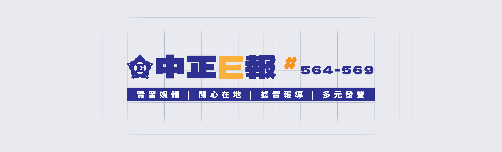
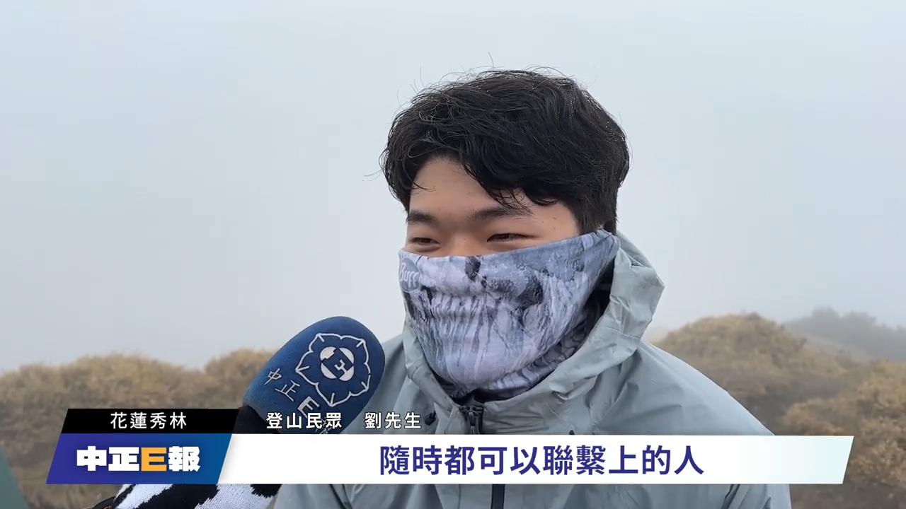
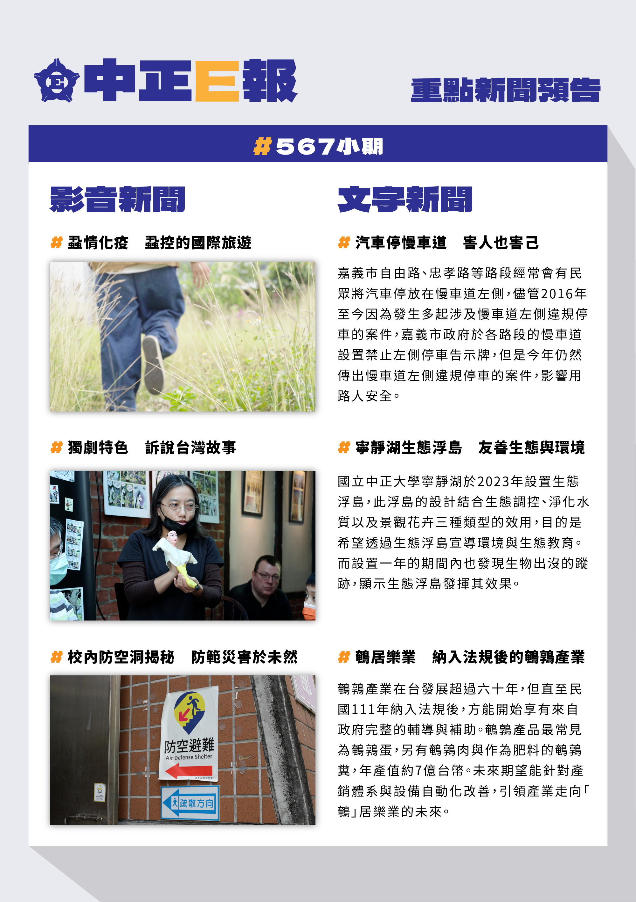

我於實習媒體《中正E報》中班任總編輯與美術編輯的職位。除了統合所有記者的選題與出稿進度，也嘗試重新定調整個新聞頻道的視覺風格，為新聞內容設計清晰易懂的排版與圖片。
在《中正E報》擔任總編輯的兩個月期間，我負責統合並領導全體實習記者的運作。從編採會議、採訪切入點討論，到後期的文稿審閱與影音初剪確認，確保每一則報導都能達到「關心在地、據實報導」的核心價值。
在擔任美術編輯期間，我重新設計新聞使用的視覺素材，以深藍色（#2C3E92）為主色調，目標呈現出具有專業新聞感、同時適合社群閱讀的視覺模板，包含頻道橫幅、影音字卡與社群圖文排版。
為社群平台與網站設計的全新 Banner，以網格線條作為背景。並呈現《中正E報》的四大核心理念「實習媒體｜關心在地｜據實報導｜多元發聲」。

影音報導的點擊率往往取決於封面的吸睛程度。我也統一的封面字體規範，讓觀眾能瞬間捕捉到新聞重點，也為節目單元設計了標準的片頭字卡，強化新聞節目的視覺包裝。

[影音新聞 單元片頭字卡]每期出刊時，我們需要將影音與文字新聞資訊，濃縮成一張適合社群閱讀的「重點新聞預告」長圖。
我將版面劃分為「影音新聞」與「文字新聞」兩大區塊。透過大量的留白、層次分明的標題大小，擷取新聞的重點內容，讓讀者能快速掌握當期資訊。

[重點新聞預告